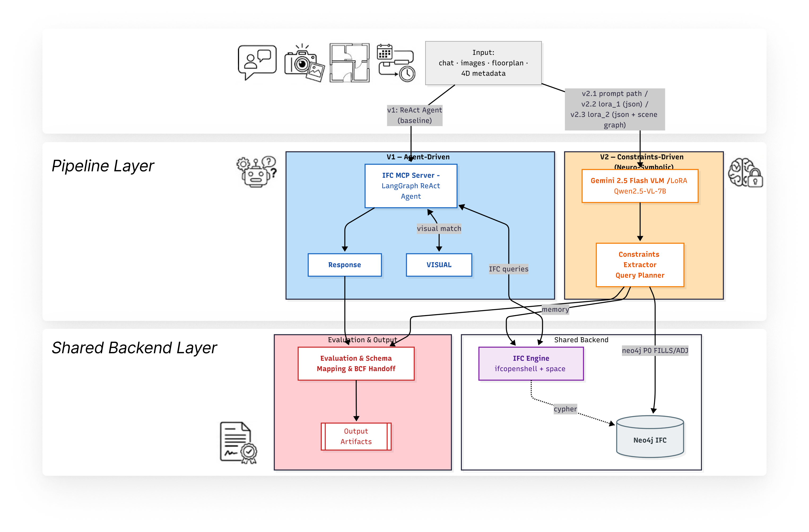
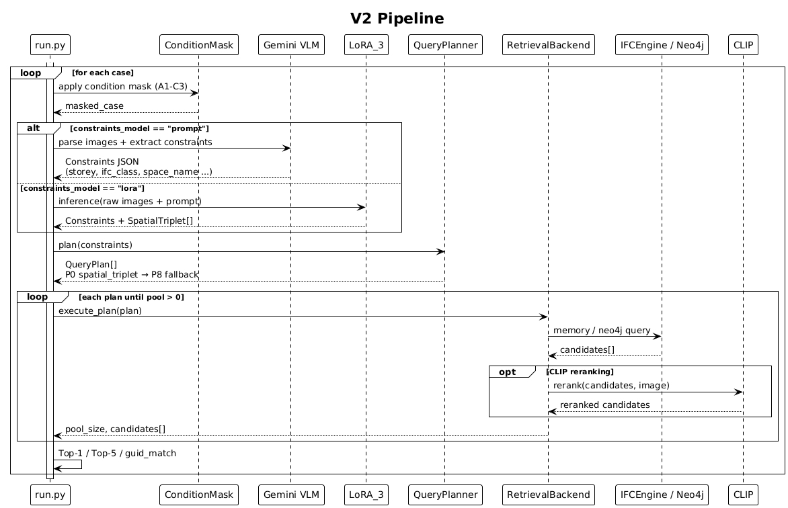
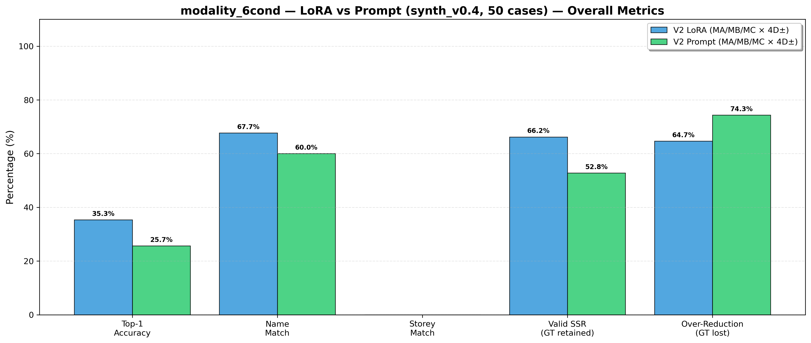
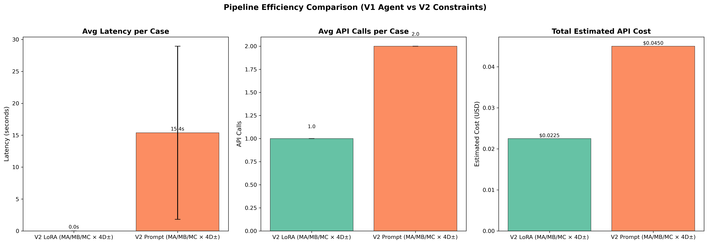
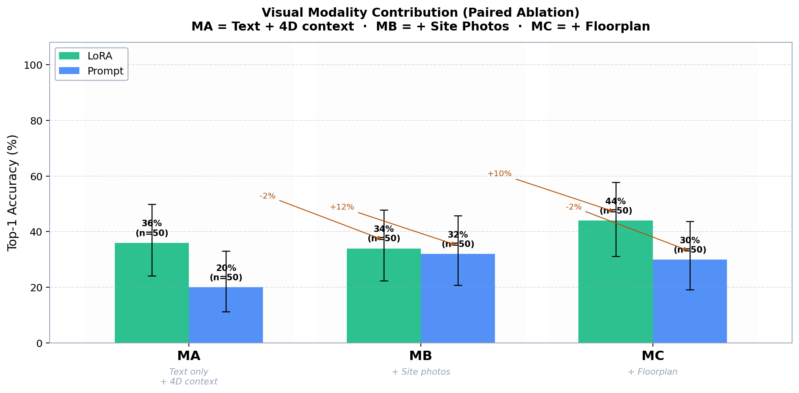
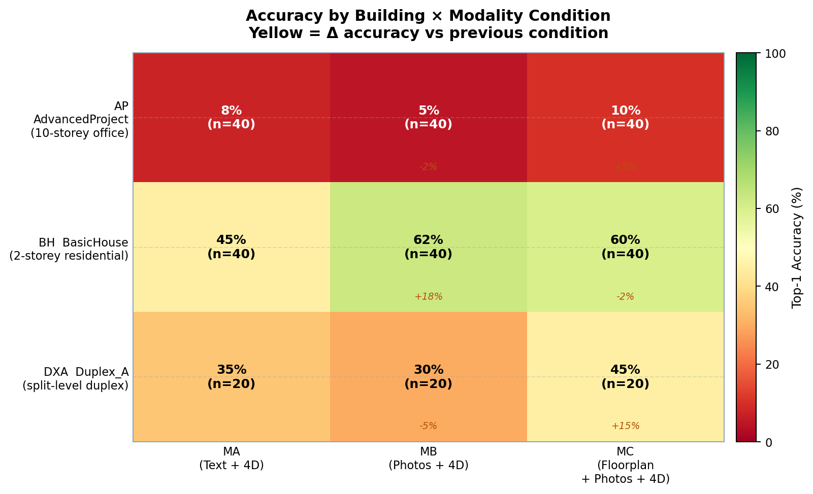

🔄️ AEC Interpreter: Cross-Modal Alignment, Schema Mapping, and Compliance [In progress]
Master's Thesis · Carnegie Mellon University · 2026
Multimodal AI system that maps informal construction site data into structured BIM data.
Stack: Python · Gemini 2.5 Flash · Qwen2.5-VL-7B · LoRA (Unsloth) · LangGraph · FastMCP · Neo4j · IfcOpenShell · CLIP · Pydantic · Modal (A100)

Live demo: left panel shows case selector + evaluation result. Center shows chat + input modalities. Right shows the 3D BIM viewer — green element = correct prediction, red = wrong.
1. Problem
Construction site inspectors send messages like "look at this door — hinge issue" with a photo. A building model might have 263 windows and 126 doors — all structurally identical. Which one is it?
| Input | Candidates | Precision |
|---|---|---|
Text only: "Which window?" |
263 | 0.38% |
| + floor, task status, site photos (4D context) | 3 | 33.33% |
→ 98.9% search space reduction by fusing multimodal context with structured retrieval.
At a higher level, the challenge is Multimodal Grounding and Schema Alignment: mapping informal, unstructured data (natural language, images, plans) to structured schema (IFC) with zero hallucination.
Core research questions: How can AI act as an interpreter layer to reliably align unstructured site evidence with project data in AEC workflows, with minimal information loss?
| # | Question | Key challenge |
|---|---|---|
| RQ1 | Can multimodal context (photos, floorplan, 4D schedule) identify the correct BIM element? | Attribute entropy: identical elements, only topology differs |
| RQ2 | Can the system output a standards-compliant inspection report? | Report schema validation — zero hallucination required |
| RQ3 | Can the system know when it can't identify an element and escalate? | Distinguishing retrieval failure from genuine absence |
2. Approach
To address these research questions, I built a complete demo system and evaluated multimodal grounding capabilities across several frameworks: v1: an Agent-Driven framework baseline, v2: Constraints-Driven with different model: Gemini and fine-tuned LoRA with domain specific training.

Query input — what the system receives

Pipeline trace — step-by-step retrieval
Query filtered visualization
Pipeline result
LoRA vs Prompt — same case, same inputs:
| LoRA_2 → CORRECT ✓ | Prompt → WRONG ✗ |
|---|---|
 |
 |
Case 049 — DXA building (Duplex_A), fire door inspection, MC condition (text + photos + floorplan + 4D). LoRA retrieves the correct GUID; Prompt with identical inputs predicts wrong element (red = GT in right panel).
| LoRA_2 (text only) → CORRECT ✓ | Prompt (text + photos + floorplan) → WRONG ✗ |
|---|---|
 |
 |
Case 084 — AP building (10-storey office), IfcDoor. LoRA with text-only input (MA) still outperforms Prompt with full multimodal input (MC).
3. System Architecture
(a) V1 — Agent-Driven (Baseline)
A LangGraph ReAct agent using MCP (Model Context Protocol) to call IFC query tools freely.
Chat + Images + 4D metadata
→ Gemini 2.5 Flash (ReAct loop)
→ MCP tool calls: search_by_type, get_by_storey, match_image_to_elements
→ IFCEngine (IfcOpenShell) + optional CLIP reranker
→ Result (EvalTrace)Works out of the box with no training — but non-deterministic, slow (~8 min / 84 cases), and hard to ablate.
(b) V2 — Constraints-Driven (Main Contribution)
Replaces free-form reasoning with an explicit constraint extraction → deterministic query planning pipeline.
Chat + Images + 4D metadata
→ ConditionMask (modality ablation: text / +photos / +floorplan / ±4D)
→ ImageParser (Gemini VLM — cached structured descriptions)
→ ConstraintsExtractor (Gemini prompt OR LoRA_2 adapter, 0.3ms)
→ QueryPlanner (deterministic 7-priority cascade)
→ RetrievalBackend (memory index OR Neo4j Cypher + optional CLIP rerank)
→ EvalTrace + V2TraceExtracted schema (Pydantic-validated, src/v2/types.py):
{
"storey_name": "6 - Sixth Floor",
"ifc_class": "IfcWindow",
"near_keywords": ["north", "external"],
"space_name": null,
"target_name_keyword": null,
"neighbor_type": "IfcColumn"
}Two extraction backends — swappable at runtime:
- Prompt-only (Gemini 2.5 Flash) — zero-shot, 15.4s/case, $0.045/case
- LoRA_2 (Qwen2.5-VL-7B, fine-tuned) — 0.3ms/case, $0.023/case, +9.6pp Top-1
4. Data Pipeline: Synthetic Training Data
Real site inspection reports are confidential. I built a fully automated synthetic data pipeline — no manual labeling required.

Skeleton-Skin Architecture:
IFC geometry → deterministic skeleton (ground-truth labels, topology)
Gemini + Blender → noisy multimodal skin (photos, chat, floorplans)Pipeline steps:
IFC model (IfcOpenShell)
1. Build element index (attributes, storey, IFC class)
2. Hunt skeletons → ground-truth labels per element
3. Blender/Bonsai headless → wireframe renders per element
4. Gemini 2.5 Flash → photoreal site photos from wireframes
5. matplotlib → floorplan patches from IFC geometry
6. Gemini → chat history + 4D metadata per case
7. 3× text augmentation → Original / Vague ("look at this") / Urgent ("QA flagged")
8. Format to Qwen2.5-VL ChatML → lora_train.jsonl + test_holdout.jsonlDataset: synth_v0.4 — three IFC buildings:
| Building | Type | Raw cases | Train (3× aug) | Holdout |
|---|---|---|---|---|
| AdvancedProject (AP) | 10-storey office | 250 | 690 | 20 |
| BasicHouse (BH) | 2-storey residential | 31 | 33 | 20 |
| Duplex_A (DXA) | Split-level duplex | 80 | 210 | 10 |
| Total | 361 | 933 | 50 |
AdvancedProject (AP)
10-storey office tower
BasicHouse (BH)
2-storey residential
Duplex_A (DXA)
Split-level duplex
The three IFC buildings used for dataset generation, providing diverse architectural complexity for training and evaluation.
LoRA_2 training — Qwen2.5-VL-7B:
Base model: unsloth/Qwen2.5-VL-7B-Instruct-bnb-4bit
Adapter: LoRA r=16, alpha=32
Training samples: 933 multimodal cases
Epochs: 3 · LR: 2e-4 · Effective batch: 16
Max seq length: 2048
Hardware: Modal A100 (40GB)
Task: [site photo + floorplan + chat] → constraints JSON
Inference latency: 0.3ms (pre-computed) vs 15.4s (Gemini API)5. Evaluation & Results
6-condition modality ablation — 50 holdout cases × 6 conditions × 2 profiles = 600 traces:
| Condition | Visual inputs | 4D context |
|---|---|---|
| MA / MA- | Text only | ON / OFF |
| MB / MB- | + Site photos | ON / OFF |
| MC / MC- | + Floorplan | ON / OFF |
Paired comparison (MA vs MA-, MB vs MB-, MC vs MC-) isolates the pure 4D contribution.
Overall: LoRA_2 vs Prompt
| Metric | LoRA_2 | Prompt | Delta |
|---|---|---|---|
| Top-1 Accuracy | 35.3% | 25.7% | +9.6 pp |
| Name Match | 67.7% | 60.0% | +7.7 pp |
| Valid SSR (GT retained) | 66.2% | 52.8% | +13.4 pp |
| Over-Reduction (GT lost) | 64.7% | 74.3% | −9.6 pp ✓ |
LoRA not only improves accuracy — it also reduces over-filtering, keeping the ground-truth element in the candidate pool more reliably.
Latency & Cost
| LoRA_2 | Prompt | |
|---|---|---|
| Avg latency/case | 0.0s (precomputed) | 15.4s |
| API calls/case | 1.0 | 2.0 |
| Est. cost/case | $0.023 | $0.045 |
Visual Modality Contribution
- Floorplan adds the most (+10pp for LoRA) — spatial layout is a strong geometric anchor
- Site photos alone (MB) add noise without spatial grounding (−2pp), potentialy due to dirty data -> need to improve the quality gate for synthetic data
- Prompt model's gains are inconsistent — fine-tuning is needed to exploit spatial signals reliably
Generalization Across Buildings
| Building | MA (Text+4D) | MB (+Photos) | MC (+Floorplan) | Key insight |
|---|---|---|---|---|
| AP (10-storey office) | 8% | 5% | 10% | Densest building — near attribute entropy floor |
| BH (2-storey house) | 45% | 62% | 60% | Photos give +18pp — few elements, easy disambiguation |
| DXA (split-level) | 35% | 30% | 45% | Floorplan gives +15pp — complex spatial layout |
LoRA_2 generalizes across all three buildings without per-building fine-tuning.
Key Insights & Trade-offs
| What works | What doesn't (yet) | Engineering lesson |
|---|---|---|
| V2 constraints pipeline: SSR > 80% consistently | AP building Top-1 ≈ 8% (near 1/46 floor) | Attribute filtering can't break homogeneity |
| LoRA adapter: 0.3ms inference, −9.6pp over-reduction | Storey extraction fails on vague chat | Wrong storey = catastrophic filter failure |
| Floorplan grounding: +10pp for LoRA | Site photos can hurt on complex buildings | VLM needs spatial anchoring, not global scene |
6. What's Next: V2.5 Neuro-Symbolic (in progress)
The core unsolved problem: 46 identical elements per floor → 2.2% Top-1 ceiling. Attribute matching and CLIP similarity both fail here — the elements are mathematically indistinguishable by intrinsic properties alone.
The fix: Introduce spatial topology as an independent signal. Two elements that are visually identical can still have unique relationships to their neighbors.
[PLANNED] V2.5 Architecture
NEURO LAYER (LoRA_3 — Qwen2.5-VL-7B)
New input: Relation Crop (union AABB of subject + reference element)
New output: spatial_relations: [{subject, predicate, object}]
Predicates: FILLS | CONTINUOUS | ADJACENT_TO | ON_TOP_OF
QUERY COMPILER (Python — zero LLM)
spatial_triplet → Cypher template → Neo4j graph query
Fallback: ADJACENT_TO → ON_STOREY → type-only (no regression)
SYMBOLIC LAYER (Neo4j)
Pre-computed topological edges from IFC geometry
Zero hallucination — no LLM in the retrieval stepRelation Crop is the core training innovation — instead of cropping a single element (Wang et al. 2025), crop the interface boundary between two elements. The model can't shortcut ("railings are near stairs") — it must reason from local pixel topology.
Target benchmark (H2 hard negatives):
| System | Top-1 on 46 identical elements |
|---|---|
| V2 LoRA_2 / CLIP baseline | ~2.2% (1/46) |
| V2.5 Neuro-Symbolic (target) | 60–80% |
Predicate vocabulary (architectural model — no MEP):
| Predicate | Mining method | Est. instances |
|---|---|---|
FILLS |
IfcRelFillsElement (IFC schema) |
~389 |
CONTINUOUS |
Wall Top ≠ storey_name field |
~771 |
ADJACENT_TO |
Centroid distance < 1.5m | ~200–400 |
ON_TOP_OF |
Z-axis comparison + AABB overlap | ~19–40 |
FILLS and CONTINUOUS are free — extracted directly from the IFC schema without any geometry computation.